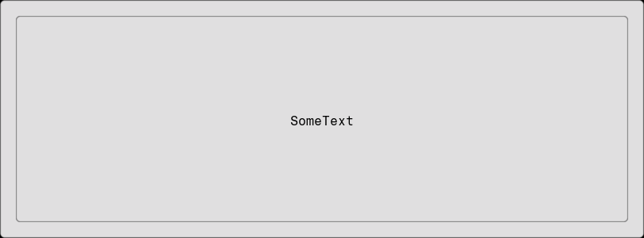
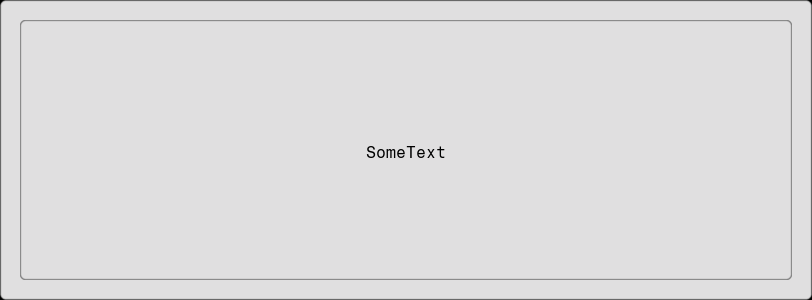

Padding
using Fugl
function MyApp()
Container(
Padding(TextButton("SomeText"), 20.0f0),
style = ContainerStyle(padding = 0.0f0)
)
end
screenshot(MyApp, "padding.png", 812, 300);
using Fugl
function MyApp()
Container(
Padding(TextButton("SomeText"), 20.0f0),
style = ContainerStyle(padding = 0.0f0)
)
end
screenshot(MyApp, "padding.png", 812, 300);
Settings
This document was generated with Documenter.jl version 1.15.0 on Saturday 25 October 2025. Using Julia version 1.11.7.